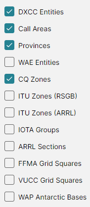

The Amateur Radio Switch
DX Atlas Pro serves two audiences: users who want a world atlas, and Radio Amateurs. All of the Amateur Radio functions are behind one switch, Tools > Amateur Radio Functions, so a user who does not need them never meets a Ham Radio term in the menus and lists.
The program asks whether to turn the switch on when it starts for the first time; see Quick Start. Click the menu item to turn it on or off at any time.
What the Switch Shows
With the Amateur Radio functions on, the program adds:
- on each map toolbar, the Amateur Radio button, with the Amateur Radio layers, and the Ionosphere button, with the ionospheric maps, the propagation map and the aurora;
- on each map toolbar, the Great Circle button; see Great Circle;
- in the Tools menu, Ionospheric Parameters... and Pre-compute Propagation Maps...;
- in the Layer box of the Lists Panel, the Amateur Radio layers, with their lists for Award Tracking, and the Prefix Search on the DXCC layer;
- in the Item Details, the DXCC entity, call area, province, zones and IOTA groups at the point clicked;
- in the Colors Dialog, the Amateur Radio Layers and Amateur Radio Labels sections;
- in the Settings Dialog, the Propagation section;
- an antenna in place of the house at your home location.
The Amateur Radio Button

The Amateur Radio button opens the list of the Amateur Radio layers of its map:
- DXCC Entities, Call Areas, Provinces and WAE Entities - see DXCC Entities and Prefixes;
- CQ Zones, ITU Zones (RSGB) and ITU Zones (ARRL) - see CQ and ITU Zones;
- IOTA Groups - see IOTA;
- ARRL Sections - see ARRL/RAC Sections;
- FFMA Grid Squares - see Other Entity Classes;
- VUCC Grid Squares - see VUCC Grid Squares.
Two Sets of Checkboxes
Each map remembers its checkboxes separately for the two states of the switch. Turning the functions off hides the Amateur Radio layers and keeps the choices you made; turning them on again brings those choices back, and the general layers as you had them in that state. So you can keep, say, a plain atlas with the cities on, and a Ham map with the cities off and the CQ zones on, and switch between them with one click.
A named view saves the state of the switch too.